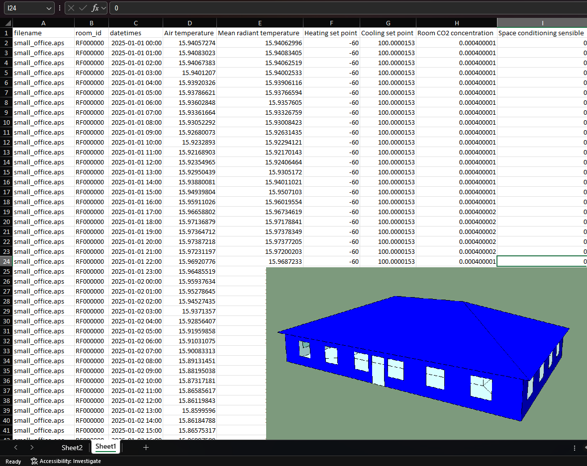

Export room results to Excel
This script:
Reads all the results files in the ‘Vista’ folder.
Loads a selection of 18 results variables for all rooms.
Saves the entire result set to an Excel Workbook.
The Excel data is “stacked” by filename and room id, which makes it suitable for Excel Pivot Tables and Charts.
The script makes use of the ResultsReader class to read the results files, the tkinter.filedialog.asksaveasfilename method to create a name for the Excel workbook and the xlsxwriter package (one of the external Python packages available in the IES-VE) to write the data to an Excel spreadsheet.

# ExportRoomResultsToExcel
# Steven Firth, Loughborough University, 2025
# v0.0.1 - 2025-10-08
# This IES-VE Python script
# - Reads all the results .aps files in the 'vista' folder.
# - Extracts a selection of room variables (air temperature, CO2 levels etc) for all rooms.
# - Exports the data to an Excel worksbook.
# Notes
# - The data is 'stacked' for each file and room combination, making it good for Excel pivot tables and charts.
# - If there are too many results files and rooms (more than 114 combined) then this will be more rows than Excel can handle (1 million).
# - This could be solved by exporting to CSV and importing the data into Excel as a linked data source (Data / From text csv).
# - Currently exports the following columns. This can be changed by commenting/uncommenting the `vars` list below.
# - filename
# - room_id
# - datetimes
# - Air temperature
# - Mean radiant temperature
# - Heating set point
# - Cooling set point
# - Room CO2 concentration
# - Space conditioning sensible
# - Heating plant sensible load
# - Cooling plant sensible load
# - Internal gain
# - Lighting gain
# - Equipment gain
# - People gain
# - Solar gain
# - External conduction gain
# - Internal conduction gain
# - Natural vent gain
# - Infiltration gain
# - Number of people
# Possible improvements
# - Add a tkinter check box to choose which .aps files to export (rather than exporting all files at present)
# - Add a tkinter check box to choose which room to export (rather than exporting all rooms at present)
# - Add a tkinter check box to choose which room variables to export (rather than the hard coded selection below)
import iesve
import os
from tkinter import Tk, messagebox
from tkinter.filedialog import asksaveasfilename
import xlsxwriter
from datetime import datetime, timedelta
# Step 1 - get the filepath to the Vista folder
currentproject = iesve.VEProject.get_current_project()
dir_currentproject = currentproject.path
if dir_currentproject == '': # if no path exists, show an error message box then exit.
root = Tk()
root.withdraw()
messagebox.showinfo('User action required', 'Please save the IES-VE project.', parent = root)
root.destroy()
quit()
dir_vista = os.path.join(dir_currentproject, 'vista')
print('dir_vista:', dir_vista)
# Step 2 - find all the .aps files in the Vista folder
fps_in = [os.path.join(dir_vista, x) for x in os.listdir(dir_vista) if x.endswith('.aps')]
print('fps_in:', fps_in)
# Step 3 - open the first results file and print the room variables.
# - optional, to help to create the vars list in Step 4 below.
if False: # change to True/False if (not) needed
for fp_in in fps_in:
with iesve.ResultsReader.open(fp_in) as f:
room_variables_list = [x for x in f.get_variables() if x['model_level'] == 'z']
for i, x in enumerate(room_variables_list):
print(f"# ('{x['display_name']}', '{x['aps_varname']}', '{x['units_type']}', '{x.get('category','')}', '{x.get('units_category', '')}'),")
break
# Step 4 - open all results file and parse the data.
vars = [ # display_name, aps_varname, units_type, category, units_category - UNCOMMENT ROWS BELOW AS NEEDED
('Air temperature', 'Room air temperature', 'Temperature', '', ''),
# ('CIBSE F1 factor', 'CIBSE F1 factor', 'Number', '', ''),
# ('CIBSE F2 factor', 'CIBSE F2 factor', 'Number', '', ''),
# ('Dry resultant temperature', 'Comfort temperature', 'Temperature', '', ''),
# ('CIBSE interm. heating correction', 'CIBSE interm. heating correction', 'Number', '', ''),
# ('Environmental temperature', 'Environmental temperature', 'Temperature', '', ''),
# ('CIBSE thermal response', 'CIBSE thermal response', 'Number', '', ''),
('Mean radiant temperature', 'Room radiant temperature', 'Temperature', '', ''),
# ('CIBSE interm. plant size', 'CIBSE interm. plant size', 'power', '', ''),
# ('Dew-point temperature', 'Room air temperature&Room % saturation&Atmospheric pressure[w]', 'Temperature', '', ''),
('Heating set point', 'Heating set point', 'Temperature', '', ''),
('Cooling set point', 'Cooling set point', 'Temperature', '', ''),
# ('Plant profile', 'Plant profile', 'Number', '', ''),
# ('HVAC zone cooling setpoint', 'HVAC zone cooling setpoint', 'Temperature', '', ''),
# ('HVAC zone heating setpoint', 'HVAC zone heating setpoint', 'Temperature', '', ''),
# ('Heating occupied and available', 'Heating occupied and available', 'Number', '', ''),
# ('Cooling occupied and available', 'Cooling occupied and available', 'Number', '', ''),
# ('People dissatisfied', 'Room air temperature&Room % saturation&Room radiant temperature', 'Percentage', '', ''),
# ('Predicted mean vote', 'Room air temperature&Room % saturation&Room radiant temperature', 'Predicted mean vote', '', ''),
# ('Comfort index', 'Room air temperature&Room % saturation&Room radiant temperature', 'Comfort index', '', ''),
# ('CLO', 'Room air temperature&Room % saturation&Room radiant temperature', 'Number', '', ''),
# ('PMV (ASHRAE 55 Analytical)', 'Room air temperature&Room % saturation&Room radiant temperature', 'Predicted mean vote', '', ''),
# ('PPD (ASHRAE 55 Analytical)', 'Room air temperature&Room % saturation&Room radiant temperature', 'Percentage', '', ''),
# ('CLO (ASHRAE 55 Analytical)', 'Room air temperature&Room % saturation&Room radiant temperature', 'Number', '', ''),
# ('PMV (ASHRAE 55 Analytical direct-solar)', 'Room air temperature&Room % saturation&Room radiant temperature', 'Predicted mean vote', '', ''),
# ('PPD (ASHRAE 55 Analytical direct-solar)', 'Room air temperature&Room % saturation&Room radiant temperature', 'Percentage', '', ''),
# ('CLO (ASHRAE 55 Analytical direct-solar)', 'Room air temperature&Room % saturation&Room radiant temperature', 'Number', '', ''),
# ('MRT (ASHRAE 55 Analytical direct-solar)', 'Room air temperature&Room % saturation&Room radiant temperature', 'Temperature', '', ''),
# ('Top (ASHRAE 55 Analytical direct-solar)', 'Room air temperature&Room radiant temperature', 'Temperature', '', ''),
# ('PMV (ASHRAE 55 Adaptive)', 'Room air temperature&Room % saturation&Room radiant temperature', 'Predicted mean vote', '', ''),
# ('PPD (ASHRAE 55 Adaptive)', 'Room air temperature&Room % saturation&Room radiant temperature', 'Percentage', '', ''),
# ('CLO (ASHRAE 55 Adaptive)', 'Room air temperature&Room % saturation&Room radiant temperature', 'Number', '', ''),
# ('PMV (ASHRAE 55 Adaptive direct-solar)', 'Room air temperature&Room % saturation&Room radiant temperature', 'Predicted mean vote', '', ''),
# ('PPD (ASHRAE 55 Adaptive direct-solar)', 'Room air temperature&Room % saturation&Room radiant temperature', 'Percentage', '', ''),
# ('CLO (ASHRAE 55 Adaptive direct-solar)', 'Room air temperature&Room % saturation&Room radiant temperature', 'Number', '', ''),
# ('MRT (ASHRAE 55 Adaptive direct-solar)', 'Room air temperature&Room % saturation&Room radiant temperature', 'Temperature', '', ''),
# ('Top (ASHRAE 55 Adaptive direct-solar)', 'Room air temperature&Room radiant temperature', 'Temperature', '', ''),
# ('PMV(ISO 7730 nominal air speed)', 'Room air temperature&Room % saturation&Room radiant temperature', 'Predicted mean vote', '', ''),
# ('PPD(ISO 7730 nominal air speed)', 'Room air temperature&Room % saturation&Room radiant temperature', 'Percentage', '', ''),
# ('PMV(ISO 7730 elevated air speed)', 'Room air temperature&Room % saturation&Room radiant temperature', 'Predicted mean vote', '', ''),
# ('PPD(ISO 7730 elevated air speed)', 'Room air temperature&Room % saturation&Room radiant temperature', 'Percentage', '', ''),
# ('PMV(ISO 7730 nom & elev air speed cat A)', 'Room air temperature&Room % saturation&Room radiant temperature', 'Predicted mean vote', '', ''),
# ('PPD(ISO 7730 nom & elev air speed cat A)', 'Room air temperature&Room % saturation&Room radiant temperature', 'Percentage', '', ''),
# ('PMV(ISO 7730 nom & elev air speed cat B)', 'Room air temperature&Room % saturation&Room radiant temperature', 'Predicted mean vote', '', ''),
# ('PPD(ISO 7730 nom & elev air speed cat B)', 'Room air temperature&Room % saturation&Room radiant temperature', 'Percentage', '', ''),
# ('PMV(ISO 7730 nom & elev air speed cat C)', 'Room air temperature&Room % saturation&Room radiant temperature', 'Predicted mean vote', '', ''),
# ('PPD(ISO 7730 nom & elev air speed cat C)', 'Room air temperature&Room % saturation&Room radiant temperature', 'Percentage', '', ''),
# ('Relative humidity', 'Room air temperature&Room % saturation&Atmospheric pressure[w]', 'Percentage', '', ''),
# ('Moisture content', 'Room air temperature&Room % saturation&Atmospheric pressure[w]', 'Moisture content', '', ''),
# ('Wet bulb temperature', 'Room air temperature&Room % saturation&Atmospheric pressure[w]', 'Temperature', '', ''),
# ('Standard effective temperature', 'Room air temperature&Room % saturation&Room radiant temperature', 'Temperature', '', ''),
# ('Operative temperature (ASHRAE)', 'Room air temperature&Room radiant temperature', 'Temperature', '', ''),
# ('Operative temperature (TM 52/CIBSE)', 'Room air temperature&Room radiant temperature', 'Temperature', '', ''),
# ('Degrees > Max. adaptive temp. (TM 52 criterion 1)', 'Room air temperature&Temperature[w]', 'Temperature', '', ''),
# ('Daily weighted exceedance (TM 52 criterion 2)', 'Room air temperature&Temperature[w]', 'DegreeHours', '', ''),
('Room CO2 concentration', 'Room CO2 concentration', 'CO2 concentration', '', ''),
('Space conditioning sensible', 'System plant etc. gains', 'Gain', '', ''),
# ('Steady state heating plant load', 'Room units steady state htg load', 'Load', '', ''),
('Heating plant sensible load', 'Room units heating load', 'Load', '', ''),
('Cooling plant sensible load', 'Room units cooling load', 'Load', '', ''),
# ('Room heating load [obs]', 'Room heating load', 'Load', '', ''),
# ('Room cooling load [obs]', 'Room cooling load', 'Load', '', ''),
('Internal gain', 'Casual gains', 'Gain', '', ''),
('Lighting gain', 'Lighting gain', 'Gain', '', ''),
('Equipment gain', 'Equipment gain', 'Gain', '', ''),
('People gain', 'People gain', 'Gain', '', ''),
('Solar gain', 'Window solar gains', 'Gain', '', ''),
('External conduction gain', 'Conduction from ext elements', 'Gain', '', ''),
('Internal conduction gain', 'Conduction from int surfaces', 'Gain', '', ''),
# ('Conduction gain', 'Conduction gain', 'Gain', '', ''),
# ('Air exch ext vent gain [obs]', 'Ventilation gain from ext air', 'Gain', '', ''),
# ('Air exch int vent gain [obs]', 'Internal ventilation gains', 'Gain', '', ''),
# ('Air system input sensible', 'System air gain', 'Gain', '', ''),
# ('Aux vent gain', 'Aux mech vent gain', 'Gain', '', ''),
('Natural vent gain', 'Natural vent gain', 'Gain', '', ''),
('Infiltration gain', 'Infiltration gain', 'Gain', '', ''),
# ('Free cooling vent gain', 'Cooling vent gain', 'Gain', '', ''),
# ('Conditioned vent gain [obs]', 'Conditioned ventilation gains', 'Gain', '', ''),
# ('Duct conduction gain', 'Duct conduction gain', 'Gain', '', ''),
# ('Duct leakage sensible gain', 'Duct leakage sensible gain', 'Gain', '', ''),
# ('MacroFlo ext vent gain', 'MacroFlo ext vent gain', 'Gain', '', ''),
# ('MacroFlo int vent gain', 'MacroFlo int vent gain', 'Gain', '', ''),
# ('Air exch external vent [obs]', 'External ventilation rate', 'Volume flow', '', ''),
# ('Air exch internal vent [obs]', 'Internal ventilation rate', 'Volume flow', '', ''),
# ('ApSys air supply', 'ApSys air supply', 'Volume flow', '', ''),
# ('ApHVAC air supply', 'ApHVAC air supply', 'Volume flow', '', ''),
# ('System air supply [obs]', 'HVAC ventilation rate', 'Volume flow', '', ''),
# ('Auxiliary vent', 'Aux mech vent', 'Volume flow', '', ''),
# ('Auxiliary vent temperature', 'Aux mech vent temp', 'Temperature', '', ''),
# ('Natural vent', 'Natural vent', 'Volume flow', '', ''),
# ('Infiltration', 'Infiltration', 'Volume flow', '', ''),
# ('Free cooling vent', 'Cooling vent', 'Volume flow', '', ''),
# ('Duct leakage inflow', 'Duct leakage inflow', 'Volume flow', '', ''),
# ('Conditioned vent [obs]', 'Conditioned ventilation rate', 'Volume flow', '', ''),
# ('MacroFlo external vent', 'MacroFlo external vent', 'Volume flow', '', ''),
# ('MacroFlo internal vent', 'MacroFlo internal vent', 'Volume flow', '', ''),
# ('Space conditioning latent', 'Room latent load', 'Gain', '', ''),
# ('Room humidification load [obs]', 'Room humidification load', 'Load', '', ''),
# ('Room dehum load [obs]', 'Room dehumidification load', 'Load', '', ''),
# ('Humidification plant load', 'Room units humidification load', 'Load', '', ''),
# ('Dehumidification plant load', 'Room units dehumidification load', 'Load', '', ''),
# ('Cooling + dehum plant load', 'Room units cooling + dehum load', 'Load', '', ''),
# ('Internal latent gain', 'Internal latent gain', 'Gain', '', ''),
# ('Equipment latent gain', 'Equipment latent gain', 'Gain', '', ''),
# ('People latent gain', 'People latent gain', 'Gain', '', ''),
('Number of people', 'Number of people', 'Number', '', ''),
# ('DHW demand load', 'DHW demand load', 'Load', '', ''),
# ('DHW demand flow', 'DHW demand flow', 'Fluid flow', '', ''),
# ('DHW target supply temperature', 'DHW target supply temperature', 'Temperature', '', ''),
# ('DHW supply temperature', 'DHW supply temperature', 'Temperature', '', ''),
# ('Daylight illuminance 1', 'Daylight illuminance 1', 'Illuminance', '', ''),
# ('Daylight illuminance 2', 'Daylight illuminance 2', 'Illuminance', '', ''),
# ('Air exch ext vent lat gain [obs]', 'Air exch ext vent lat gain', 'Gain', '', ''),
# ('Air exch int vent lat gain [obs]', 'Air exch int vent lat gain', 'Gain', '', ''),
# ('Air system input latent', 'System air latent gain', 'Gain', '', ''),
# ('Vent/infiltr. latent gain', 'Air exchange latent gain', 'Gain', '', ''),
# ('Aux vent lat gain', 'Aux mech vent lat gain', 'Gain', '', ''),
# ('Duct leakage lat gain', 'Duct leakage lat gain', 'Gain', '', ''),
# ('Natural vent lat gain', 'Natural vent lat gain', 'Gain', '', ''),
# ('Infiltration lat gain', 'Infiltration lat gain', 'Gain', '', ''),
# ('Free cooling vent lat gain', 'Cooling vent lat gain', 'Gain', '', ''),
# ('Conditioned vent lat gain [obs]', 'Conditioned vent lat gain', 'Gain', '', ''),
# ('MacroFlo ext vent lat gain', 'MacroFlo ext vent lat gain', 'Gain', '', ''),
# ('MacroFlo int vent lat gain', 'MacroFlo int vent lat gain', 'Gain', '', ''),
# ('Convective room plant load', 'Convective plant load', 'Gain', '', ''),
# ('Convective lighting gain', 'Convective lighting gain', 'Gain', '', ''),
# ('Convective equipment gain', 'Convective equipment gain', 'Gain', '', ''),
# ('Convective people gain', 'Convective people gain', 'Gain', '', ''),
# ('NCM sensible load', 'NCM sensible load', 'Gain', '', ''),
# ('Conduction gain - external walls', 'Conduction gain - external wall', 'Gain', '', ''),
# ('Conduction gain - roofs', 'Conduction gain - roof', 'Gain', '', ''),
# ('Conduction gain - ground/exposed floors', 'Conduction gain - ground floor', 'Gain', '', ''),
# ('Conduction gain - external doors', 'Conduction gain - external door', 'Gain', '', ''),
# ('Conduction gain - external windows', 'Conduction gain - external glazed', 'Gain', '', ''),
# ('Conduction gain - rooflights', 'Conduction gain - rooflight', 'Gain', '', ''),
# ('Conduction gain - internal walls', 'Conduction gain - internal wall', 'Gain', '', ''),
# ('Conduction gain - ceilings', 'Conduction gain - ceiling', 'Gain', '', ''),
# ('Conduction gain - internal floors', 'Conduction gain - floor', 'Gain', '', ''),
# ('Conduction gain - internal doors', 'Conduction gain - internal door', 'Gain', '', ''),
# ('Conduction gain - internal glazing', 'Conduction gain - internal glazed', 'Gain', '', ''),
# ('Process simulation latent gain', 'Process simulation lat gain', 'Gain', '', ''),
# ('Process simulation sensible gain', 'Process simulation gain', 'Gain', '', ''),
# ('Air & furniture dynamics gain', 'Air & furniture dynamics gain', 'Gain', '', ''),
# ('System occupied and available', 'System occupied and available', 'Number', '', ''),
# ('System operation and available', 'System operation and available', 'Number', '', ''),
]
result = []
for fp_in in fps_in:
print(fp_in)
with iesve.ResultsReader.open(fp_in) as f:
first_day, last_day, results_per_day, simulation_year = f.first_day, f.last_day, f.results_per_day, 2025
print('first_day, last_day, results_per_day, simulation_year:', first_day, last_day, results_per_day, simulation_year)
first_datetime = datetime(simulation_year,1,1) + timedelta(days = first_day-1)
print('first_datetime', first_datetime)
datetimes = [first_datetime + timedelta(hours = (i * 24 / results_per_day))
for i in range((last_day - first_day + 1) * results_per_day)]
print(datetimes[0], datetimes[-1])
print(len(datetimes))
for room_id in f.get_room_ids():
print(room_id)
d = {
'filename': os.path.basename(fp_in),
'room_id': room_id,
'datetimes': datetimes, # [x.strftime('%Y-%m-%d %H:%M') for x in datetimes],
'data': {display_name: f.get_room_results(room_id, aps_varname, display_name, 'z')
for display_name, aps_varname, units_type, category, units_category in vars}
}
result.append(d)
# Step 5. Select a filename for the new Excel file
root = Tk()
root.withdraw()
response = asksaveasfilename(parent = root, initialdir = dir_vista, defaultextension = '.xlsx', filetypes = [("Excel files", "*.xlsx")])
print('response:', response)
root.destroy()
if response is None: # if 'cancel' is pressed.
quit()
else:
fp_out = response
print('fp_out', fp_out)
# Step 6. Create Excel workbook
try:
with xlsxwriter.Workbook(fp_out) as workbook:
worksheet = workbook.add_worksheet()
date_format = workbook.add_format({'num_format': 'yyyy-mm-dd hh:mm'})
display_names = [x[0] for x in vars]
print('display_names:', display_names)
headers = ['filename', 'room_id', 'datetimes'] + display_names
print('headers:', headers)
row = 0
for col, x in enumerate(headers):
worksheet.write(row, col, x)
row += 1
for d in result:
print(d['filename'], d['room_id'])
data_length = len(d['datetimes'])
for i in range(data_length):
for col, header in enumerate(headers):
if col <2:
worksheet.write(row, col, d[header])
elif col == 2:
worksheet.write(row, col, d[header][i], date_format)
else:
if not d['data'][header] is None:
worksheet.write(row, col, d['data'][header][i])
row += 1
except xlsxwriter.exceptions.FileCreateError:
root = Tk()
root.withdraw()
messagebox.showinfo('File Create Error', 'Permission denied. Is the Excel workbook open?', parent = root)
root.destroy()
quit()
print('---end---')